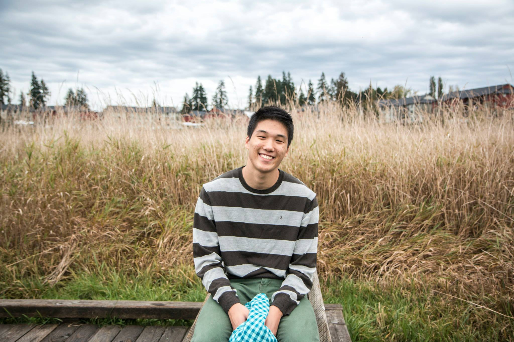

|  |
Joseph Yoon is a Korean American, currently attending the University of Washington. Constantly moving, he has lived in California, Flordia, Georgia, and Washington. His technological passions consist of: programming, designing, and video editing. These various passions have motivated his intention to specialize in UX design and front-end web development. Aside from technology, he enjoys billiards, breakdancing, hiking, exercising, bowling, and eating various food items. If you wish to learn more about him, please take a look at his skills page. Thank you! |